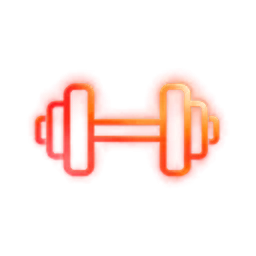
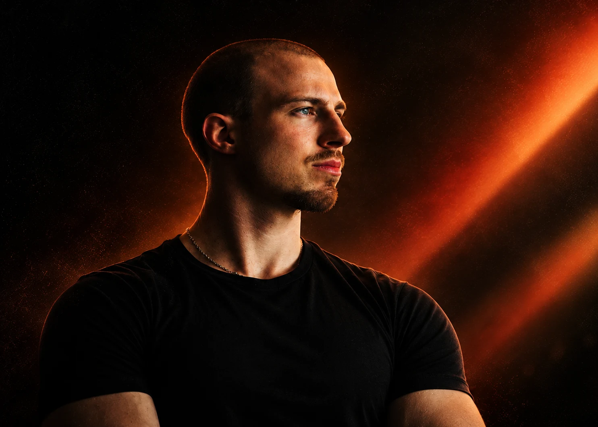
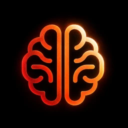

Fitnesa koučings
Treniņu plāns pēc tavas vēstures, darba nedēļas un mērķa - spēks, izturība un atjaunošanās vienā sistēmā.

Plāns.Slodze.Atjaunošanās.
UzmērītUzzīmētNodot
Pakalpojumi
Mēs visi esam mēģinājuši mainīt ieradumus ar gribasspēku. Izrādās, ilgāk iztur tas, kas ir projektēts - slodze, atjaunošanās un fokuss, salikti vienā plānā. Labā ziņa: tādu plānu var uzzīmēt tieši tev, un es parādīšu, kā.

Treniņu plāns pēc tavas vēstures, darba nedēļas un mērķa - spēks, izturība un atjaunošanās vienā sistēmā.

Fokuss, regulācija un noturība zem slodzes - trenēti tāpat kā jebkura cita spēja.
Sakārtoju, kā tavs darbs izskatās no malas, lai tas atbilst saturam.
Ansoneri principi - uzzīmēti laboratorijā, pārbaudīti laukumā